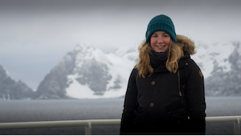

I am postdoctoral researcher at Trinity College Dublin, interested in reconstructing past environmental change using sediment cores and microfossils found within them. My current research focuses on producing sea level reconstructions from Ireland, as part of the A4 project.
In addition to my research, I participate in outreach activities on the topics of climate change and sea level rise. I am the lead applicant on Línte na Farraige, a project funded by the Creative Ireland Programme, ‘Creative Climate Action’, which seeks to meaningfully connect people with profound changes happening in our environment, society and economy arising from climate change. Línte na Farraige is a collaborative project including a team of artists, scientists, the Climate Action Regional Offices, local authorities, community groups among others. The project consists of a set of visual light installations by artists Timo Aho and Pekka Niittyvirta, that will be placed across Irish coastal sites in the coming months. Check out the website
Prior to my appointment at Trinity College Dublin, I carried out a bachelors and integrated master’s degree in Geological Oceanography at Bangor University and a PhD with British Antarctic Survey (BAS), University of Southampton and Durham University. My PhD project reconstructed the deglacial history of the Anvers Trough, western Antarctic Peninsula shelf.
My research interests stem from my childhood on the Cornish coast and curiosity about the sea. I am passionate about supporting equality and diversity in STEM and sit on the Athena SWAN self-assessment team in the School of Natural Sciences, Trinity College Dublin.
